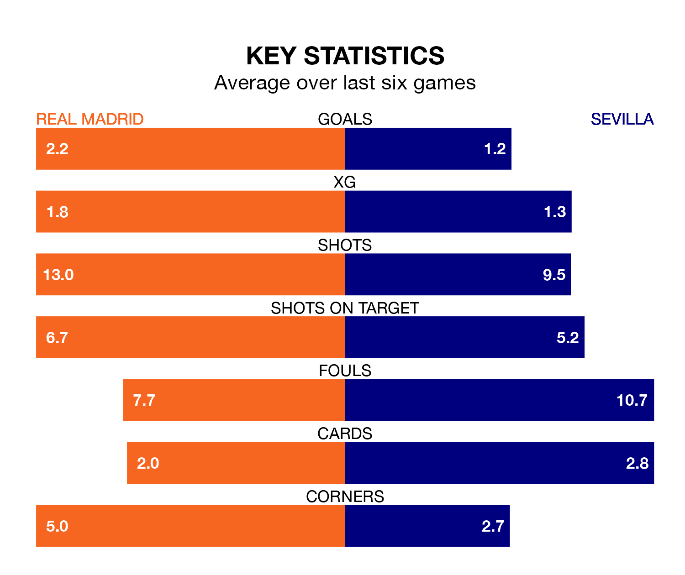

Real Madrid are heavy favourites to keep all three points at home in Sunday's late kick-off against Sevilla.
Madrid, who sit top of La Liga with 25 games played, are priced at 1.2 to seal victory at the Estadio Santiago Bernabéu.
Sitting 14 places and 38 points behind them in the table, Sevilla are 9.5 to win with *Betting Company*, while the draw is at 5.8.
With 53 goals in 25 games so far this season, Madrid are the league's highest scorers with 2.1 goals per game. And they are conceding fewer than average, letting in 16 goals at a rate of 0.6 per game.
Sevilla, meanwhile, are below average scorers, with 1.2 goals per game, compared to a league average of 1.3. They have conceded 1.5 goals per game.
In Jude Bellingham, the home team have the league's sharpest shooter so far this season. He has notched 16 goals in 21 appearances.
His goal rate of one every 112 minutes is quicker than that of Youssef En-Nesyri, the visitors' top scorer with a goal every 209 minutes, and a total of seven goals in 20 games.
In the last 10 years, Madrid and Sevilla have played each other on 24 occasions. Madrid won 16 of them, Sevilla five, and they drew three times.
On average, Madrid scored 2.2 goals and Sevilla 1.3 in those matches.
Their last meeting was on October 21, when they played out a 1-1 draw.
Madrid are in good form in La Liga, with four wins and two draws from their last six games.
With two wins and two draws over that period, Sevilla's form is much worse – they have taken eight points from 18, compared to Madrid's 14.
Madrid's last match was on February 18, a 1-1 draw against Rayo Vallecano, with Joselu getting the goal for Madrid.
Sevilla drew 0-0 with Valencia CF last time out, on February 17.
Updated: 12:18 (UTC), 19/02/24